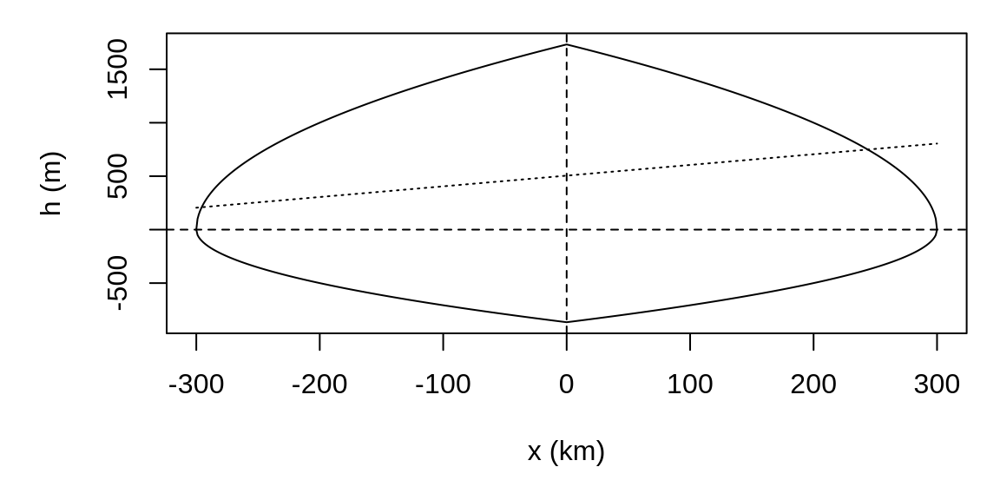
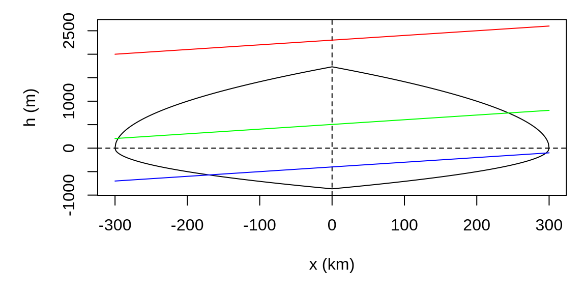
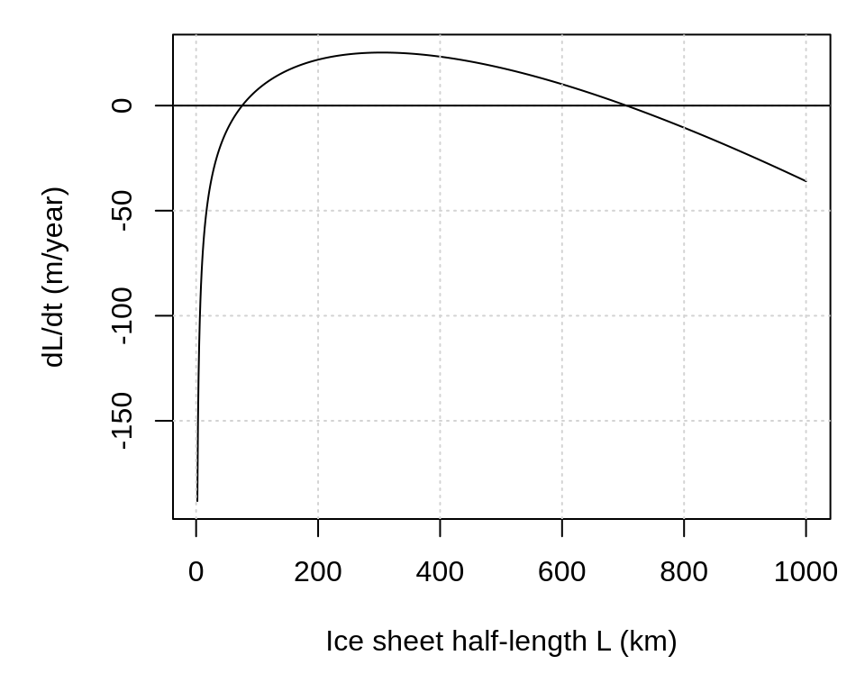
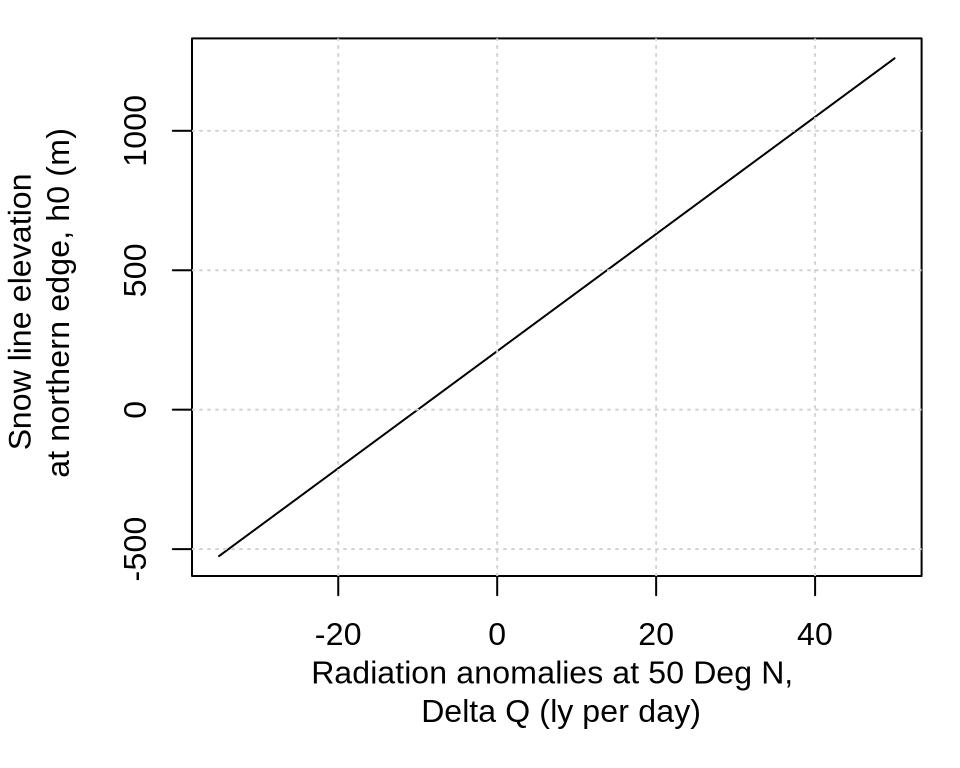
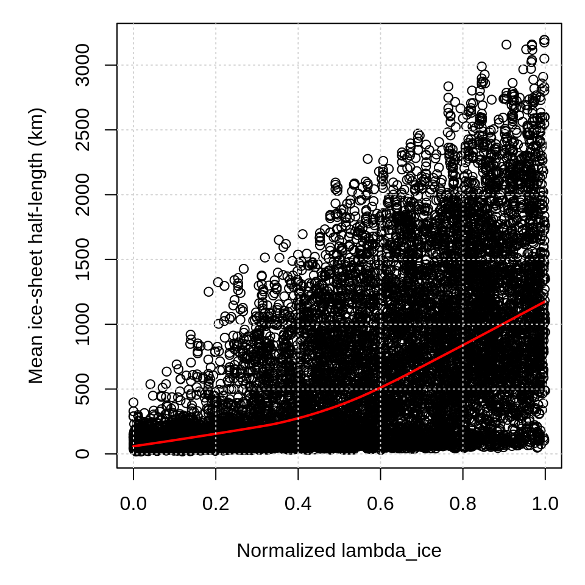
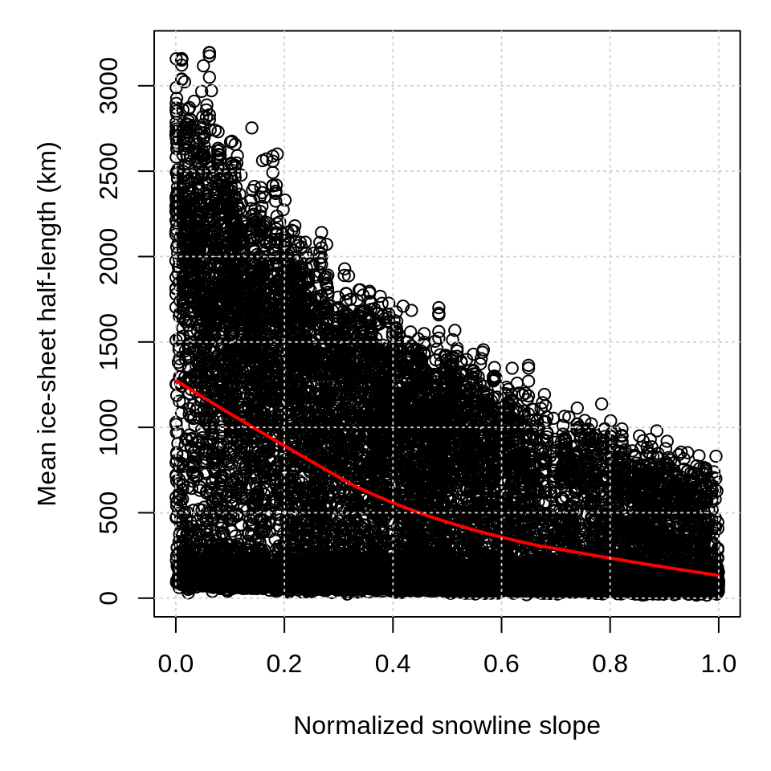
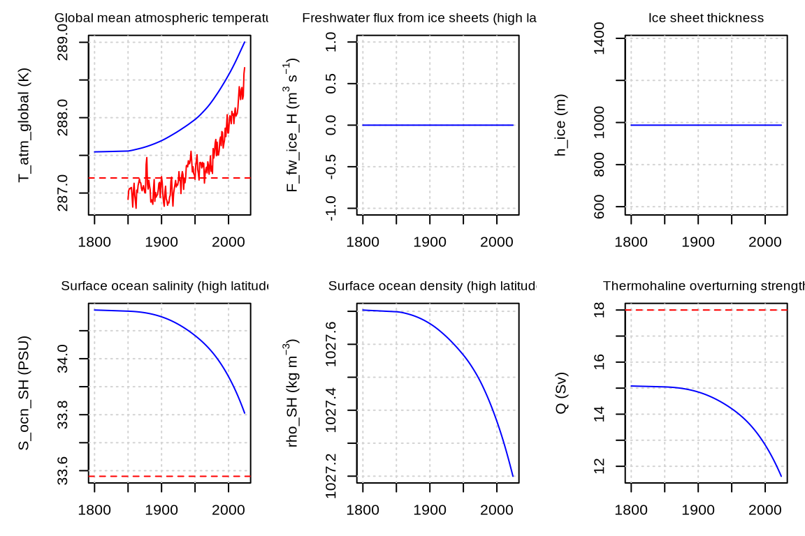

8 Week 8: Cryosphere
The first part of this tutorial focuses on Weertman’s conceptual ice-sheet model. We begin by reproducing the basic geometric features of an ice sheet. Next, we conduct a global sensitivity analysis to identify which model parameters have the greatest influence on mean ice-sheet length over the past 300,000 years. In the second part, we perform an eigenanalysis to investigate how ice sheets influence the climate system’s equilibrium state and stability. Finally, in the third part, we investigate how dynamically coupling ice sheets to the climate system affects climate evolution from 1800 to the present.
8.1 Connceptual Ice Sheet Model
In this section, we build physical intuition for the mechanisms that drive ice sheet growth and retreat using the conceptual model developed by Weertman (1976). In this two-dimensional model, ice sheet growth and retreat depend on where the snow line intersects the ice surface. We begin by reconstructing the geometry of Weertman’s ice sheet. This geometry is defined as follows:
Upper ice sheet surface: \(h(x) = \sqrt{\lambda(L-|x|)}\)
Lower ice sheet surface: \(h'(x) = -\frac{1}{2}h(x)\)
Snow line elevation: \(h_s(x) = h_0 + s(x + L)\)
Choose \(L\) = 300,000 m, \(\lambda\) = 10 m, h_0 = 205 m, s = 1e-3 m/m
Plot the cross section of an ice sheet using the equations above. Your figure should resemble the figure below.

Quiz Question 1: What is the direction of this cross section?
Quiz Question 2: Why is the vertical extent of the ice sheet below zero?
Quiz Question 3: How come the snowline has a slope?
Quiz Question 4: Where is the firn line?
Add two additional snow lines in your code, one where the snow line is above the entire ice sheet, and one where it is below. Color each line as follows:
Snow line above upper ice surface: red
Snow line intersecting upper ice surface: green
Snow line below upper ice surface: blue
You can set the color of a line in R like this lines(x, y, col = "blue")

The Weertman model distinguishes three cases:
- Flowing ice with full accumulation
- Flowing ice with partial accumulation
- Stagnant ice
Quiz Question 5: What colors correspond to the cases (1), (2), and (3)?
Let us now focus on the case where we have flowing ice with partial accumulation. The corresponding equation is:
\[ \frac{dL}{dt} = \frac{2a}{3\sqrt{\lambda}\sqrt{L}} \left[ L - \frac{(1+a'/a)\lambda}{4s^2} \left( -1+\sqrt{1+\frac{4s(h_0+2sL)}{\lambda}} \right)^2 \right] \]
where \(a\) is accumulation, \(a'\) is ablation, \(s\) is the slope of the snowline, \(h_0\) is the snow line elevation at the northern edge, \(\lambda\) relates ice sheet height \(h\) and half-length \(L\). The values of these constants are:
\(s\) = 0.001 m/m is the snowline slope
\(\lambda\) = 14 m is ice sheet profile parameter
\(a\) = 1.2 m yr\(^{-1}\) is the accumulation rate
\(a'\) = 2.75 m yr\(^{-1}\) is the ablation rate
\(\Delta Q_0\) = 10 ly per day is the insolation offset
\(\alpha\) = 21000 m \(\times\) s (m / (ly per day)
\(h_0\) = 400 m is the height of the snowline at the northern edge of the ice sheet
Plot this tendency function. Your result should look like the figure below.

Quiz Question 6: Let’s say our ice sheet has a half-length of 400 km. How will this value change over time?
8.2 Milankovitch Cycle
To simulate ice-sheet growth and retreat in response to Milankovitch forcing, we express \(h_0\) as a function of insolation anomalies. This way, the Milankovitch cycle shifts the snowline vertically:
\[ h_0 = \alpha(\Delta Q + \Delta Q_0) \]
where \(\Delta Q_0\) is a constant (\(\Delta Q_0\) = 10 ly per day) and \(\alpha = 21,000\) m ly\(^{-1}\) day * \(s\). Recall that \(s\) is the snowline slope (\(s\) = 0.001 m/m). Plot \(h_0\) as a function of \(\Delta Q\) for values ranging from -35 to 50 ly per day. Your figure should look lik the the plot below.
par(mar = c(5, 5, 1, 1))
s <- 1e-3 # Snowline slope (m/m)
delta_Q_0 <- 10 # ly d-1
delta_Q <- seq(-35, 50, 1) # ly d-1
alpha <- 21000 * s
h_0 <- alpha * (delta_Q + delta_Q_0)
plot(
x = delta_Q, y = h_0, type = "l",
xlab = "Radiation anomalies at 50 Deg N, \n Delta Q (ly per day)",
ylab = "Snow line elevation \n at northern edge, h0 (m)"
)
grid()
Quiz Question 7: What does this figure tell you?
Let us now simulate how ice sheets respond to the Milankovitch cycle. The code below considers the three cases of ice sheet growth and retreat (flowing ice with full accumulation, flowing ice with partial accumulation, stagnant ice), as well as ice sheet nucleation. The first code chunk below defines the a function of the Weertman ice sheet model. We then need to numericall integrate this function over time, using incolation anomalies as an external forcing.
# ============================================================
# Weertman ice sheet model
# ============================================================
weertman_ice <- function(L_ice, delta_Q,
s_ice, lambda_ice,
a_acc, a_abl,
delta_Q_0, alpha_ice) {
# -------------------------
# Milankovitch forcing
# -------------------------
# Snowline elevation, Equation (8)
h_0_ice <- alpha_ice * (delta_Q + delta_Q_0)
# -------------------------
# Case 1: Ice-free state and nucleation
# -------------------------
if (L_ice <= 0) {
if (h_0_ice < 0) {
# Weertman's nucleation prescription
L_ice <- -h_0_ice / (2 * s_ice)
ice_regime <- "Nucleation"
} else {
return(list(
L_ice = 0,
H_ice = 0,
h_0_ice = h_0_ice,
dL_ice = 0,
regime = "Ice-free"
))
}
}
# -------------------------
# Ice-sheet geometry
# -------------------------
# Maximum ice-sheet elevation (m)
H_ice <- sqrt(lambda_ice * L_ice)
# Snowline elevation at summit and southern margin
h_summit <- h_0_ice + s_ice * L_ice
h_margin <- h_0_ice + 2 * s_ice * L_ice
# -------------------------
# Case 2: Stagnant ice (Eq. 7)
# -------------------------
if (h_summit >= H_ice) {
dL_ice <- -2 * a_abl *
sqrt(L_ice / lambda_ice)
ice_regime <- "Stagnant"
# -------------------------
# Case 3: Flowing ice, full accumulation
# -------------------------
} else if (h_margin <= 0) {
dL_ice <- (2 * a_acc * L_ice) /
(3 * sqrt(lambda_ice * L_ice))
ice_regime <- "Flowing - full accumulation"
# -------------------------
# Case 4: Flowing ice, partial accumulation
# -------------------------
} else {
# Flowing ice: Weertman's Equation (6)
dL_ice <- (2 * a_acc / (3 * sqrt(lambda_ice * L_ice))) *
(
L_ice -
((1 + a_abl / a_acc) * lambda_ice / (4 * s_ice^2)) *
(
-1 + sqrt(
1 + 4 * s_ice * (h_0_ice + 2 * s_ice * L_ice) /
lambda_ice
)
)^2
)
ice_regime <- "Flowing - partial accumulation"
}
return(list(
L_ice = L_ice,
H_ice = H_ice,
h_0_ice = h_0_ice,
dL_ice = dL_ice,
regime = ice_regime
))
}Next we define a function that integrates the Weertman ice sheet model.
# ============================================================
# Euler integration
# ============================================================
run_ice <- function(L_ice, delta_Q,
s_ice, lambda_ice,
a_acc, a_abl,
delta_Q_0, alpha_ice,
times) {
n <- length(times)
# Input checks
stopifnot(
n >= 2,
length(delta_Q) == n,
all(diff(times) > 0),
all(is.finite(delta_Q)),
s_ice > 0,
lambda_ice > 0,
a_acc > 0,
a_abl >= 0,
L_ice >= 0
)
# Store results
L <- numeric(n)
H <- numeric(n)
V <- numeric(n)
h0 <- numeric(n)
dL <- numeric(n)
regime <- character(n)
# -------------------------
# Euler integration
# -------------------------
for (i in seq_along(times)) {
# Calculate ice-sheet tendency
ice <- weertman_ice(
L_ice, delta_Q[i],
s_ice, lambda_ice,
a_acc, a_abl,
delta_Q_0, alpha_ice
)
# Account for nucleation
L_ice <- ice$L_ice
# Store results
L[i] <- L_ice
H[i] <- ice$H_ice
V[i] <- sqrt(lambda_ice * L_ice^3) # m2
h0[i] <- ice$h_0_ice
dL[i] <- ice$dL_ice
regime[i] <- ice$regime
# Euler update
if (i < n) {
dt <- times[i + 1] - times[i]
L_ice <- max(0, L_ice + ice$dL_ice * dt)
}
}
# -------------------------
# Output
# -------------------------
data.frame(
time = times,
delta_Q = delta_Q,
h_0_ice = h0,
L_ice = L,
H_ice = H,
V_ice = V,
dL_ice = dL,
regime = regime
)
}Now we need to calculate the insolation anomalies that are used as an input in the Weertman model
library(palinsol)
# -------------------------
# Milankovitch forcing at 50 N
# High-radiation half-year
# -------------------------
lat <- 50 * pi / 180 # Degrees to radians
# -------------------------
# Time
# -------------------------
times <- seq(-300000, 100000, by = 1000) # Years relative to 1950
# Duration of the high-radiation half-year (seconds)
summer_seconds <- (365.2422 / 2) * 86400
# Integrated caloric summer insolation (kJ m-2)
Q_integrated <- sapply(times, function(t) {
palinsol::calins(
orbit = palinsol::la04(t),
lat = lat
)
})
# Mean summer insolation (W m-2)
Q <- Q_integrated * 1000 / summer_seconds
# Reference insolation at 1950 CE (W m-2)
Q_ref <- palinsol::calins(
orbit = palinsol::la04(0),
lat = lat
) * 1000 / summer_seconds
# Insolation anomaly (W m-2)
delta_Q <- Q - Q_refLet us now integrate the Weertman model forward in time using varying incoming solar radiation. Note that I have changed the original notation of insolation units from langley (ly) per day to W m\(^{-2}\), where 1 ly per day = 41.85 \(\times\) 1000 / 86400 s/d = 0.484375 W m\(^{-2}\).
# -------------------------
# Parameters
# -------------------------
s_ice <- 1e-3 # Snowline slope (m/m)
lambda_ice <- 14 # Ice-sheet profile parameter (m)
a_acc <- 1.2 # Accumulation rate (m yr-1)
a_abl <- 2.75 * a_acc # Ablation rate (m yr-1)
delta_Q_0 <- 4.84375 # Insolation offset (W/m2)
alpha_ice <- 43354.84 * s_ice # m / (W/m-2)
# -------------------------
# Initial conditions
# -------------------------
L_ice <- 700000 # Ice-sheet half-width (m)
# -------------------------
# Run model
# -------------------------
df <- run_ice(
L_ice = L_ice,
delta_Q = delta_Q,
s_ice = s_ice,
lambda_ice = lambda_ice,
a_acc = a_acc,
a_abl = a_abl,
delta_Q_0 = delta_Q_0,
alpha_ice = alpha_ice,
times = times
)Plot results
par(mfrow = c(2, 1), mar = c(5, 5, 3, 1))
plot(times / 1000, delta_Q,
type = "l",
xlab = "Time (ka relative to 1950)",
ylab = "Insolation anomaly (ly/day)",
main = "Summer insolation at 50 N"
)
abline(v = c(2026 - 1850) / 1000, col = "blue") # vertical line for the year 2026
plot(df$time / 1000, df$L_ice / 1000,
type = "l",
xlab = "Time (ka relative to 1950)",
ylab = "Ice-sheet half-width (km)",
main = "Ice-sheet evolution"
)
abline(v = c(2026 - 1850) / 1000, col = "blue") # vertical line for the year 2026Quiz Question 8: How many times does the model produce periods without any ice sheets?
8.3 Global Sensitivity Analysis
We will now conduct a global sennsitivity analysis for the Weertman ice sheet model. We begin by defining the parameter ranges.
library(sensitivity)
param_names <- c(
"s_ice",
"lambda_ice",
"a_acc",
"abl_acc_ratio",
"h0_ref",
"alpha_ice"
)
lower <- c(
s_ice = 0.0007,
lambda_ice = 7,
a_acc = 0.6,
abl_acc_ratio = 2.4,
h0_ref = 100,
alpha_ice = 30
)
upper <- c(
s_ice = 0.0013,
lambda_ice = 21,
a_acc = 1.8,
abl_acc_ratio = 3.1,
h0_ref = 350,
alpha_ice = 60
)Next we need to create a wrapper around run_ice().
run_weertman_sobol <- function(par, output = "L_mean") {
# Convert normalized parameters to physical values
par <- lower + as.numeric(par) * (upper - lower)
names(par) <- param_names
# Extract physical parameters
s_ice <- par["s_ice"]
lambda_ice <- par["lambda_ice"]
a_acc <- par["a_acc"]
abl_acc_ratio <- par["abl_acc_ratio"]
h0_ref <- par["h0_ref"]
alpha_ice <- par["alpha_ice"]
# Derived parameters
a_abl <- a_acc * abl_acc_ratio
delta_Q_0 <- h0_ref / alpha_ice
# Run Weertman model
df <- run_ice(
L_ice = L_ice,
delta_Q = delta_Q,
s_ice = s_ice,
lambda_ice = lambda_ice,
a_acc = a_acc,
a_abl = a_abl,
delta_Q_0 = delta_Q_0,
alpha_ice = alpha_ice,
times = times
)
# Return mean L in km
if (output == "L_mean") {
return(mean(df$L) / 1000)
}
if (output == "L_final") {
return(tail(df$L, 1) / 1000)
}
stop("Unknown output")
}Next, we randomly sample each parameter from a range of 0 to 1. We use this range because all parameter values are normalized before sampling.
set.seed(123)
N <- 2000
p <- length(param_names)
# Normalized parameter samples between 0 and 1
X1 <- as.data.frame(
matrix(runif(N * p), nrow = N, ncol = p)
)
X2 <- as.data.frame(
matrix(runif(N * p), nrow = N, ncol = p)
)
colnames(X1) <- param_names
colnames(X2) <- param_namesNow we are ready to run the Sobol analysis.
sobol <- sensitivity::sobolSalt(
model = NULL,
X1 = X1,
X2 = X2,
nboot = 100
)
# Run model for normalized parameter combinations
Y <- apply(
sobol$X,
1,
run_weertman_sobol,
output = "L_mean"
)
# Calculate Sobol indices
sobol_result <- sensitivity::tell(sobol, Y)
colnames(sobol_result$X) <- param_names
saveRDS(object = sobol_result, file = "W08_sobol_result.rds")
data <- readRDS("W08_sobol_result.rds")
S <- data$S$original
S <- data.frame(S, param_names)
colnames(S) <- c("S", "parameter")
S <- S[order(S$S, decreasing = TRUE), ]Let’s plot the first-order Sobol indices.
Quiz Question 9: What do the Sobol indices tell you?
Let us now plot the mean ice sheet half-length against the \(\lambda\).
par(mar = c(5, 5, 1, 1))
x_param <- sobol_result$X[, "lambda_ice"]
y_output <- Y
plot(x_param, y_output,
xlab = "Normalized lambda_ice",
ylab = "Mean ice-sheet half-length (km)"
)
lines(lowess(x_param, y_output), col = "red", lwd = 2)
grid()
Quiz Question 10: What does this Figure tell you?
Let us now plot the mean ice sheet half-length against the slope of the snowline.
par(mar = c(5, 5, 1, 1))
x_param <- sobol_result$X[, "s_ice"]
y_output <- Y
plot(x_param, y_output,
xlab = "Normalized snowline slope",
ylab = "Mean ice-sheet half-length (km)"
)
lines(lowess(x_param, y_output), col = "red", lwd = 2)
grid()
Quiz Question 11: What does this Figure tell you?
8.4 Eigenanalysis
Let us now investigate how ice sheets influence the equilibrium state of the climate system. In these experiments, we dynamically couple all modules (except for NPZD to reduce computation time) and compare simulations with the ice-sheet module enabled and disabled:
- Atmosphere
- Ocean
- Air-sea carbon exchange
- Land
- Sea ice
- Ice sheets (on/off)
8.4.1 Ice sheets turned off
Turning ice sheets off does not mean there are no ice sheets. It means that the ice sheets are constant and do not dynamically evolve over time. Let’s setup the model configuration.
rm(list = ls())
# Load the QUEST package:
library(quest)
# Set the path to the configuration files:
config.path <- "/global/teaching-project/sg5112000/shared_files/config"
# Load the configuration files:
config <- config_load(path = config.path)
# Set the flags to what we want
config$flags$run_AirSeaCarbon <- TRUE
config$flags$run_atmosphere <- TRUE
config$flags$run_ocean <- TRUE
config$flags$run_npzd <- FALSE
config$flags$run_land <- TRUE
config$flags$run_sic <- TRUE
config$flags$run_icesheets <- FALSE
config$flags$anthropogenic_emissions <- FALSE
config$flags$prescribed_CO2 <- FALSE
config$flags$prescribed_seaice <- FALSE
config$flags$diagnose_carbonates <- FALSENow we spin up the model for 10000 years.
times <- seq(-10000, 0, by = 1)
output <- core_run_esm(config = config, times = times)
saveRDS(output, "output_W08_config_01.rds")
# Create initialization file from this spinup
utils_write_new_init(
input_file = "output_W08_config_01.rds",
output_file = "config_init_W08_config_01.R",
final_year = TRUE
)Now we conduct the eigenanalysis for this model configuration.
# Get the spun up state variables
state_eq <- source("config_init_W08_config_01.R")$value
# Select state variables that will be perturbed
select_variables <- c("T_atm_L", "T_atm_H", "T_ocn_SL", "T_ocn_SH", "T_ocn_DL", "T_ocn_DH")
# Find the equilibria
equilibria <- eval_equilibria(config, state_eq, select_variables = select_variables, n_starts = 100)
# Conduct eigenanalysis
stability_results <- eval_eigenvalues(config,
equilibria_dimensionless = equilibria$dimensionless,
state_eq = state_eq,
state_min_active = equilibria$state_min_active,
state_max_active = equilibria$state_max_active,
delta_time = 500,
eps = 0.1
)
stability_results_ice_off <- stability_results
saveRDS(stability_results_ice_off, "W08_stability_results_ice_off.rds")8.4.2 Ice sheets turned on
Let us repeat the same workflow but for ice sheets turned on.
# Load the configuration files:
config <- config_load(path = config.path)
# Set the flags to what we want
config$flags$run_AirSeaCarbon <- TRUE
config$flags$run_atmosphere <- TRUE
config$flags$run_ocean <- TRUE
config$flags$run_npzd <- FALSE
config$flags$run_land <- TRUE
config$flags$run_sic <- TRUE
config$flags$run_icesheets <- TRUE
config$flags$anthropogenic_emissions <- FALSE
config$flags$prescribed_CO2 <- FALSE
config$flags$prescribed_seaice <- FALSE
config$flags$diagnose_carbonates <- FALSENow we spin up the model for 10000 years.
times <- seq(-10000, 0, by = 1)
output <- core_run_esm(config = config, times = times)
saveRDS(output, "output_W08_config_02.rds")
# Create initialization file from this spinup
utils_write_new_init(
input_file = "output_W08_config_02.rds",
output_file = "config_init_W08_config_02.R",
final_year = TRUE
)Now we conduct the eigenanalysis for this model configuration.
# Get the spun up state variables
state_eq <- source("config_init_W08_config_02.R")$value
# Select state variables that will be perturbed
select_variables <- c("T_atm_L", "T_atm_H", "T_ocn_SL", "T_ocn_SH", "T_ocn_DL", "T_ocn_DH")
# Find the equilibria
equilibria <- eval_equilibria(config, state_eq, select_variables = select_variables, n_starts = 100)
# Conduct eigenanalysis
stability_results <- eval_eigenvalues(config,
equilibria_dimensionless = equilibria$dimensionless,
state_eq = state_eq,
state_min_active = equilibria$state_min_active,
state_max_active = equilibria$state_max_active,
delta_time = 500,
eps = 0.1
)
stability_results_ice_on <- stability_results
saveRDS(stability_results_ice_on, "W08_stability_results_ice_on.rds")8.4.3 Comparing the Jacobians
Let us now compare the results from both simulations
# land turned on:
ice_on <- readRDS("W08_stability_results_ice_on.rds")
# land turned off:
ice_off <- readRDS("W08_stability_results_ice_off.rds")
# Jacobian
delta_jacobian <- ice_on$equilibrium_1$jacobian - ice_off$equilibrium_1$jacobian
print(round(ice_on$equilibrium_1$jacobian, 3))## T_atm_L T_atm_H T_ocn_SL T_ocn_SH T_ocn_DL T_ocn_DH
## T_atm_L 0 0 0.001 0.001 0.056 0.018
## T_atm_H 0 0 -0.002 -0.001 0.075 0.033
## T_ocn_SL 0 0 0.002 0.001 0.097 0.029
## T_ocn_SH 0 0 -0.002 -0.001 0.055 0.026
## T_ocn_DL 0 0 0.011 0.008 0.697 0.136
## T_ocn_DH 0 0 0.000 0.000 0.044 0.362## T_atm_L T_atm_H T_ocn_SL T_ocn_SH T_ocn_DL T_ocn_DH
## T_atm_L 0 0 0.001 0.001 0.057 0.018
## T_atm_H 0 0 0.001 0.000 0.076 0.033
## T_ocn_SL 0 0 0.002 0.002 0.098 0.029
## T_ocn_SH 0 0 0.000 0.000 0.055 0.026
## T_ocn_DL 0 0 0.011 0.008 0.697 0.136
## T_ocn_DH 0 0 0.006 0.003 0.046 0.362## T_atm_L T_atm_H T_ocn_SL T_ocn_SH T_ocn_DL T_ocn_DH
## T_atm_L 0 0 -0.001 0.000 0.000 0
## T_atm_H 0 0 -0.002 -0.001 -0.001 0
## T_ocn_SL 0 0 -0.001 0.000 0.000 0
## T_ocn_SH 0 0 -0.002 -0.001 -0.001 0
## T_ocn_DL 0 0 0.000 0.000 0.000 0
## T_ocn_DH 0 0 -0.006 -0.003 -0.002 0Quiz Question 12: How does dynamic ice sheet coupling affect the Jacobian?
8.4.4 Comparing the eigenmodes
# Eigenvalues
delta_lambda <- ice_on$equilibrium_1$eigenvalues[1] - ice_off$equilibrium_1$eigenvalues[1]
print(ice_on$equilibrium_1$eigenvalues[1])
print(ice_off$equilibrium_1$eigenvalues[1])
print(delta_lambda)
# Timescales
delta_timescales <- ice_on$equilibrium_1$timescales[1] - ice_off$equilibrium_1$timescales[1]
print(ice_on$equilibrium_1$timescales[1])
print(ice_off$equilibrium_1$timescales[1])
print(delta_timescales)Quiz Question 13: How do ice sheets affect the time scale of the dominant eigenmode?
# dominant eigenvector land on
domVec_ice_on <- ice_on$equilibrium_1$eigenvectors[, 1]
print(domVec_ice_on)
# dominant eigenvector land off
domVec_ice_off <- ice_off$equilibrium_1$eigenvectors[, 1]
print(domVec_ice_off)Quiz Question 14: Which variable contributes most to the dominant eigenmode when ice sheets are turned off?
Quiz Question 15: How does ice sheet dynamics affect the balance between restoring and amplifying processes in the vicinity of the equilibrium?
8.5 Anthropogenic Emissions
Let us now simulate how ice sheets affect the climate system during the industrial period.
rm(list = ls())
# Load the QUEST package:
library(quest)
# Set the path to the configuration files:
config.path <- "/global/teaching-project/sg5112000/shared_files/config"
# Load the configuration files:
config <- config_load(path = config.path)
# Set the flags to what we want
config$flags$run_AirSeaCarbon <- TRUE
config$flags$run_atmosphere <- TRUE
config$flags$run_ocean <- TRUE
config$flags$run_npzd <- FALSE
config$flags$run_land <- TRUE
config$flags$run_sic <- TRUE
config$flags$run_icesheets <- FALSE
config$flags$anthropogenic_emissions <- TRUE
config$flags$prescribed_CO2 <- FALSE
config$flags$prescribed_seaice <- FALSE
config$flags$diagnose_carbonates <- FALSE8.5.1 Ice sheets turned off
# Get the spun-up state
state_eq <- source("config_init_W08_config_01.R")$value
config$initial_calues <- state_eq
# flags
config$flags$run_icesheets <- FALSE
# Run model and save output
times <- seq(1800, 2024, by = 1)
output <- core_run_esm(config = config, times = times)
saveRDS(output, "output_W08_config_01_transient.rds")
output <- readRDS("output_W08_config_01_transient.rds")
utils_plot(config, output, variables = c(
"T_atm_global", "M", "F_fw_ice_H",
"h_ice", "A_ice", "S_ocn_SH", "rho_SH",
"Q"
), my.xlim = c(1800, 2024), PNGfile = FALSE)
8.5.2 Ice sheets turned on
# Get the spun-up state
state_eq <- source("config_init_W08_config_02.R")$value
config$initial_calues <- state_eq
# Flags
config$flags$run_icesheets <- TRUE
# Run model and save output
times <- seq(1800, 2024, by = 1)
output <- core_run_esm(config = config, times = times)
saveRDS(output, "output_W08_config_02_transient.rds")
output <- readRDS("output_W08_config_02_transient.rds")
utils_plot(config, output, variables = c(
"T_atm_global", "M", "F_fw_ice_H",
"h_ice", "A_ice", "S_ocn_SH", "rho_SH",
"Q"
), my.xlim = c(1800, 2024), PNGfile = FALSE)Quiz Question 16: How does the dynamic ice sheet coupling affect the strength of the thermohaline circulation since the industrial revolution?